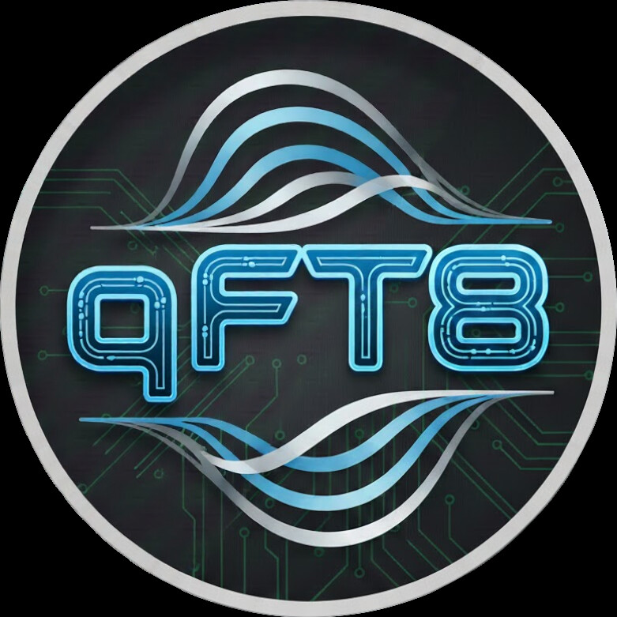
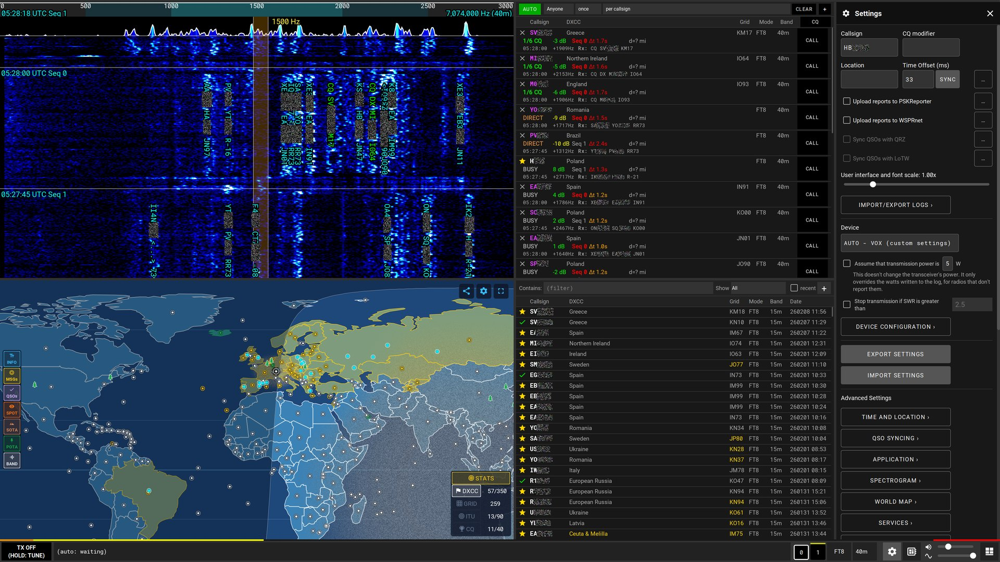
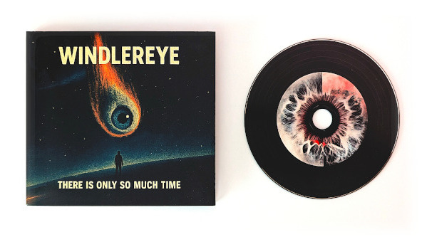

Több üzemmódú amatőrrádió Androidra, Windowsra, macOS-re és Linuxra
Alakítsd androidos telefonodat vagy táblagépedet, illetve Windows, macOS vagy Linux rendszerű számítógépedet teljes digitális üzemmódú amatőrrádió-állomássá. Csatlakoztasd a rádiót, adj CQ-t, és forgalmazz az egész világgal.



Jellemzők
- Ingyenes, reklámmentes, fiók nélkül
- Androidos telefonok és táblagépek, Windows, macOS és Linux
- FT8, FT4, FT2, LQ8, JS8, WSPR, CW, RTTY, JTTY, SSTV és SSB
- Plug and play több mint 70 rádióval
- Teljes AUTO vagy kézi hívás egy kattintással
- Élő világtérkép valós idejű spotokkal, POTA, SOTA és sávonkénti terjedés
- Teljesen testreszabható
- Integráció: QRZ, Logbook of the World, Wavelog, Cloudlog, qFT8log és eQSL; ADIF, SOTA és POTA
- Távvezérlés bármely böngészőből
- 37 nyelv
Letöltés
- AndroidEhhez az eszközhözLetöltés .apk: 5.02MB
- Windows (64 bites)Ehhez az eszközhözLetöltés .zip: 35.66MB
- Windows (32 bites)Ehhez az eszközhözLetöltés .zip: 43.14MB
- macOS (minden Mac: Apple Silicon és Intel)Ehhez az eszközhözLetöltés .dmg: 83.48MB
- Linux (64 bites)Ehhez az eszközhözLetöltés .tar.gz: 47.18MB
- Linux (32 bites)Ehhez az eszközhözLetöltés .tar.gz: 70.25MB
- Linux (ARM 64 bites)Ehhez az eszközhözLetöltés .tar.gz: 67.21MB
- Linux (ARM 32 bites)Ehhez az eszközhözLetöltés .tar.gz: 62.57MB
A közvetlen Android-letöltés (.apk) a Play Áruházon kívül települ: az Android kérheti, hogy engedélyezd az alkalmazások telepítését a böngészőből vagy a fájlkezelőből.
A felhasználói kézikönyv olvasása
Bármely számítógép Java 21 vagy újabb verzióval (például egy Raspberry Pi): .jar: 12.40MB
Támogasson a Windlereye zenei projektem meghallgatásával

Külön köszönet és fő közreműködők
Roger Ribes González (EA3ISA) — Felbecsülhetetlen útmutatás, szoros együttműködés és kiterjedt terepi bétatesztelés a qFT8 legkorábbi fejlesztési szakaszai óta, jelentősen hozzájárulva a SOTA és POTA funkciók kialakításához.
Andriy Dinets (UR4LBR) — Kiterjedt bétatesztelés és létfontosságú segítség a spektrogram-megjelenítés, a digitális jelfeldolgozás, az SNR pontosság bonyolult kérdéseinek megoldásában, valamint a SOTA és POTA képességek fejlesztésében.
Rob Colclough (GW8RDI) — A QuantumSDR és uSDX Open projektek megalkotója és fejlesztője. Meghatározó szerepet játszott abban, hogy a qFT8 több adó-vevőt és változatos Android-eszközt támogasson, mélyreható műszaki tanácsadást és tesztelést nyújtva.